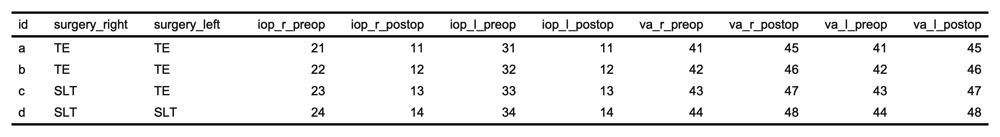

See more with eye
Features
- Handling of visual acuity notations
- Super easy count of subjects and eyes, with smooth integration in your rmarkdown report
- Recode your eye variable
- Reshape your eye data - long or wide
- Quick summary of your eye data
- Get common summary statistics
- Calculate age
- Clean NA equivalent entries
Installation
You can install eye from CRAN using install.packages("eye")
Or you can install the development version from github:
I recommend to also get eyedata, a package collating open source ophthalmic data sets.
Details and examples
Visual acuity
Pesky visual acuity notations are now a matter of the past. Convert between any of Snellen (meter/ feet/ decimal!), logMAR and ETDRS. The notation will be detected automatically and converted to the desired notation. For some more details see VA conversion. For entries with mixed notation, use va_mixed instead.
You can also decide to simply “clean” your VA vector with va(x). This will remove all entries that are certainly no VA.
Examples
x <- c(23, 56, 74, 58) ## ETDRS letters
to_logmar(x) # wrapper of va(x, to = "logmar")
#> From etdrs
#> [1] 1.24 0.58 0.22 0.54
## ... or convert to snellen
to_snellen(x)
#> From etdrs
#> [1] "20/320" "20/80" "20/32" "20/70"
## eye knows metric as well
to_snellen(x, type = "m")
#> From etdrs
#> [1] "6/96" "6/24" "6/9.6" "6/21"
## And the decimal snellen notation, so much loved in Germany
to_snellen(x, type = "dec")
#> From etdrs
#> [1] "0.062" "0.25" "0.625" "0.3"
## Remove weird entries and implausible entries depending on the VA choice
x <- c("NLP", "0.8", "34", "3/60", "2/200", "20/50", " ", ".", "-", "NULL")
to_snellen(x)
#> From snellen. Could be snellen, logmar, snellendec, etdrs
#> 6x NA introduced for: 0.8, 34, , ., -, NULL
#> [1] "20/20000" NA NA "20/400" "20/2000" "20/50"
#> [7] NA NA NA NA
to_snellen(x, from = "snellendec")
#> 8x NA introduced for: 34, 3/60, 2/200, 20/50, , ., -, NULL
#> [1] "20/20000" "20/25" NA NA NA NA
#> [7] NA NA NA NA
to_snellen(x, from = "etdrs")
#> 8x NA introduced for: 0.8, 3/60, 2/200, 20/50, , ., -, NULL
#> [1] "20/20000" NA "20/200" NA NA NA
#> [7] NA NA NA NA
to_snellen(x, from = "logmar")
#> 8x NA introduced for: 34, 3/60, 2/200, 20/50, , ., -, NULL
#> [1] "20/20000" "20/125" NA NA NA NA
#> [7] NA NA NA NA
## "plus/minus" entries are converted to the most probable threshold (any spaces allowed)
x <- c("20/200 - 1", "6/6-2", "20/50 + 3", "6/6-4", "20/33 + 4")
to_logmar(x)
#> From snellen
#> [1] 1.0 0.0 0.3 0.1 0.1
## or evaluating them as logmar values (each optotype equals 0.02 logmar)
to_logmar(x, smallstep = TRUE)
#> From snellen
#> [1] 1.02 0.04 0.34 0.08 0.14
## or you can also decide to completely ignore them (converting them to the nearest snellen value in the VA chart, or if you convert to logMAR, rounding to the first digit)
to_snellen(x, noplus = TRUE)
#> From snellen
#> [1] "20/200" "20/20" "20/50" "20/20" "20/32"
# terribly mixed notations
x <- c(NA, "nlp", 1:2, 1.1, -1, "20/40", "4/6", "6/1000", 34)
va_mixed(x, to = "snellen")
#> [1] NA "20/20000" "20/2000" "20/2000" "20/250" NA
#> [7] "20/40" "20/32" "20/4000" "20/200"
# "I only have snellen and snellen decimal notation in my data"
va_mixed(x, to = "snellen", possible = c("snellen", "snellendec"))
#> [1] NA "20/20000" "20/20" "20/10" "20/20" NA
#> [7] "20/40" "20/32" "20/4000" NA
# "I have snellen, logmar and etdrs in my data, and there is no etdrs value less than 4"
va_mixed(x, to = "snellen", possible = c("snellen", "logmar", "etdrs"))
#> [1] NA "20/20000" "20/200" "20/2000" "20/250" NA
#> [7] "20/40" "20/32" "20/4000" "20/200"
## just clean your entries without conversion
va(x)
#> [1] NA "nlp" "1" "2" "1.1" "-1" "20/40" "4/6"
#> [9] "6/1000" "34"
## recognises various ways to write qualitative values such as "hand motion"
y <- c(23, "20/50", "hand motion", "hm", "count fingers", "no light perception", "nlp", "nonsense")
va(y)
#> 1x NA introduced for: nonsense
#> [1] "23" "20/50" "hm" "hm" "cf" "nlp" "nlp" NA
## you can set custom strings that are recognised as values
set_eye_strings(nlp = c("nonsense", "nlp", "no light perception"))
va(y)
#> [1] "23" "20/50" "hm" "hm" "cf" "nlp" "nlp" "nlp"
## reset to default with an empty call to set_eye_strings
set_eye_strings()
va(y)
#> 1x NA introduced for: nonsense
#> [1] "23" "20/50" "hm" "hm" "cf" "nlp" "nlp" NA
## use your own custom values for qualitative entries
to_logmar(y)
#> From snellen. Could be snellen, logmar, snellendec, etdrs
#> 2x NA introduced for: 23, nonsense
#> [1] NA 0.4 2.3 2.3 2.0 3.0 3.0 NA
to_logmar(y, quali_values = list(cf = 2, hm = 3, lp = 4, nlp = 6 ))
#> From snellen. Could be snellen, logmar, snellendec, etdrs
#> 2x NA introduced for: 23, nonsense
#> [1] NA 0.4 3.0 3.0 2.0 6.0 6.0 NACount subjects and eyes
This is a massive convenience function to count subjects and eyes. Because this essentially returns a list, the stored data can easily be accessed by subsetting (e.g., with $). You can get the subject IDs for each subset with details = TRUE.
library(eyedata)
eyes(amd2)
#> ══ Counts ═══════════════
#> id eyes right left
#> 3357 3357 1681 1676
eyes(amd2)$right
#> [1] 1681
eyes(amd2, details = TRUE)
#> ══ $counts ══════════════════════════════════
#> id eyes right left both
#> 3357 3357 1681 1676 0
#>
#> ══ $id ══════════════════════════════════════
#> $right
#> [1] "id_100" "id_1001" "id_1002" "id_1003" "id_1007" "id_1009"
#> # … with 1675 more subjects
#>
#> $left
#> [1] "id_1" "id_10" "id_1000" "id_1004" "id_1005" "id_1006"
#> # … with 1670 more subjects
#>
#> $both
#> character(0)
head(eyes(amd2, details = TRUE)$id$right)
#> [1] "id_100" "id_1001" "id_1002" "id_1003" "id_1007" "id_1009"Smooth integration into rmarkdown
eyestr was designed with the use in rmarkdown in mind, most explicitly for the use inline. You can change the way numbers are converted to english with the english argument. By default, numbers smaller than or equal to 12 will be real English, all other numbers will be … numbers. You can capitalise the first number with the caps argument.
| rmarkdown code | results in |
|---|---|
We analyzed `r eyestr(amd2)`
|
We analyzed 3357 eyes of 3357 patients |
We analyzed `r eyestr(head(amd2, 100))`
|
We analyzed eleven eyes of eleven patients |
We analyzed `r eyestr(amd2, english = "all")`
|
We analyzed three thousand three hundred fifty-seven eyes of three thousand three hundred fifty-seven patients |
`r eyestr(head(amd2, 100), caps = TRUE)` were analyzed |
Eleven eyes of eleven patients were analyzed |
We analyzed `r eyestr(head(amd2, 100), english = "none")`
|
We analyzed 11 eyes of 11 patients |
Recoding the eye variable
Makes recoding eye variables very easy. It deals with weird missing entries like "." and "", or "N/A"
x <- c("r", "re", "od", "right", "l", "le", "os", "left", "both", "ou")
recodeye(x)
#> [1] "r" "r" "r" "r" "l" "l" "l" "l" "b" "b"
## chose the resulting codes
recodeye(x, to = c("od", "os", "ou"))
#> [1] "od" "od" "od" "od" "os" "os" "os" "os" "ou" "ou"
## Numeric codes 0:1/ 1:2 are recognized
x <- 1:2
recodeye(x)
#> Eyes coded 1:2. Interpreting r = 1
#> [1] "r" "l"
## with weird missing values
x <- c(1:2, ".", NA, "", " ")
recodeye(x)
#> Missing values and/or meaningless strings contained
#> Eyes coded 1:2. Interpreting r = 1
#> [1] "r" "l" NA NA NA NA
## If you are using different strings to code for eyes, e.g., you are using a different language, you can change this either with the "eyestrings" argument
french <- c("OD", "droit", "gauche", "OG")
recodeye(french, eyestrings = list(r = c("droit", "od"), l = c("gauche", "og")))
#> [1] "r" "r" "l" "l"
## or change it more globally with `set_eye_strings`
set_eye_strings(right = c("droit", "od"), left = c("gauche", "og"))
recodeye(french)
#> [1] "r" "r" "l" "l"
# to restore the default, call set_eye_strings empty
set_eye_strings()reveal
Show common statistics for all numeric columns, for the entire cohort or aggregated by group(s):
reveal(iris)
#> var mean sd n min max
#> 1 Sepal.Length 5.8 0.8 150 4.3 7.9
#> 2 Sepal.Width 3.1 0.4 150 2.0 4.4
#> 3 Petal.Length 3.8 1.8 150 1.0 6.9
#> 4 Petal.Width 1.2 0.8 150 0.1 2.5
#> 5 Species 2.0 0.8 150 1.0 3.0
reveal(iris, by = "Species") #can be several groups
#> var1 var2 var3 var4 var5 var6 var7 var8
#> 1 setosa setosa setosa setosa versicolor versicolor versicolor versicolor
#> 2 setosa setosa setosa setosa versicolor versicolor versicolor versicolor
#> 3 setosa setosa setosa setosa versicolor versicolor versicolor versicolor
#> 4 setosa setosa setosa setosa versicolor versicolor versicolor versicolor
#> 5 setosa setosa setosa setosa versicolor versicolor versicolor versicolor
#> 6 setosa setosa setosa setosa versicolor versicolor versicolor versicolor
#> 7 setosa setosa setosa setosa versicolor versicolor versicolor versicolor
#> 8 setosa setosa setosa setosa versicolor versicolor versicolor versicolor
#> 9 setosa setosa setosa setosa versicolor versicolor versicolor versicolor
#> 10 setosa setosa setosa setosa versicolor versicolor versicolor versicolor
#> 11 setosa setosa setosa setosa versicolor versicolor versicolor versicolor
#> 12 setosa setosa setosa setosa versicolor versicolor versicolor versicolor
#> var9 var10 var11 var12 var mean sd n min max
#> 1 virginica virginica virginica virginica Sepal.Length 5.0 0.4 50 4.3 5.8
#> 2 virginica virginica virginica virginica Sepal.Width 3.4 0.4 50 2.3 4.4
#> 3 virginica virginica virginica virginica Petal.Length 1.5 0.2 50 1.0 1.9
#> 4 virginica virginica virginica virginica Petal.Width 0.2 0.1 50 0.1 0.6
#> 5 virginica virginica virginica virginica Sepal.Length 5.9 0.5 50 4.9 7.0
#> 6 virginica virginica virginica virginica Sepal.Width 2.8 0.3 50 2.0 3.4
#> 7 virginica virginica virginica virginica Petal.Length 4.3 0.5 50 3.0 5.1
#> 8 virginica virginica virginica virginica Petal.Width 1.3 0.2 50 1.0 1.8
#> 9 virginica virginica virginica virginica Sepal.Length 6.6 0.6 50 4.9 7.9
#> 10 virginica virginica virginica virginica Sepal.Width 3.0 0.3 50 2.2 3.8
#> 11 virginica virginica virginica virginica Petal.Length 5.6 0.6 50 4.5 6.9
#> 12 virginica virginica virginica virginica Petal.Width 2.0 0.3 50 1.4 2.5getage
- Calculate age in years, as periods or durations
myop
Often enough, there are right eye / left eye columns for more than one variable, e.g., for both IOP and VA. This may be a necessary data formal for specific questions. However, “eye” is also variable (a dimension of your observation), and it can also be stored in a separate column. The data would be “longer”.
Indeed, R requires exactly this data shape for many tasks: “eye[r/l]” as a separate column, and each eye-related variable (e.g., IOP or VA) in their own dedicated column.
myop provides an easy to use API for an automatic reshape of your data to a “myop” format.
## Simple data frame with one column for right eye and left eye.
iop_wide <- data.frame(id = letters[1:3], iop_r = 11:13, iop_l = 14:16)
iop_wide
#> id iop_r iop_l
#> 1 a 11 14
#> 2 b 12 15
#> 3 c 13 16
myop(iop_wide)
#> # A tibble: 6 × 3
#> id eye iop
#> <chr> <chr> <chr>
#> 1 a right 11
#> 2 a left 14
#> 3 b right 12
#> 4 b left 15
#> 5 c right 13
#> 6 c left 16
Click to unfold code to create wide_df
wide_df <- data.frame(
id = letters[1:4],
surgery_right = c("TE", "TE", "SLT", "SLT"),
surgery_left = c("TE", "TE", "TE", "SLT"),
iop_r_preop = 21:24, iop_r_postop = 11:14,
iop_l_preop = 31:34, iop_l_postop = 11:14,
va_r_preop = 41:44, va_r_postop = 45:48,
va_l_preop = 41:44, va_l_postop = 45:48
)
myop_df <- myop(wide_df)
myop_df
#> # A tibble: 8 × 7
#> id eye surgery iop_preop iop_postop va_preop va_postop
#> <chr> <chr> <chr> <chr> <chr> <chr> <chr>
#> 1 a right TE 21 11 41 45
#> 2 a left TE 31 11 41 45
#> 3 b right TE 22 12 42 46
#> 4 b left TE 32 12 42 46
#> 5 c right SLT 23 13 43 47
#> 6 c left TE 33 13 43 47
#> 7 d right SLT 24 14 44 48
#> 8 d left SLT 34 14 44 48hyperop
If you actually need certain eye-related variables spread over two columns, hyperop() is your friend:
hyperop(myop(iop_wide), iop)
#> # A tibble: 3 × 3
#> id r_iop l_iop
#> <chr> <chr> <chr>
#> 1 a 11 14
#> 2 b 12 15
#> 3 c 13 16
hyperop(myop_df, cols = matches("va|iop"))
#> # A tibble: 5 × 10
#> id surgery r_iop_preop r_iop_postop r_va_preop r_va_postop l_iop_preop
#> <chr> <chr> <chr> <chr> <chr> <chr> <chr>
#> 1 a TE 21 11 41 45 31
#> 2 b TE 22 12 42 46 32
#> 3 c SLT 23 13 43 47 <NA>
#> 4 c TE <NA> <NA> <NA> <NA> 33
#> 5 d SLT 24 14 44 48 34
#> # ℹ 3 more variables: l_iop_postop <chr>, l_va_preop <chr>, l_va_postop <chr>Names and codes
eye works smoother with tidy data (any package does, really!)
An important part of tidy data are good names. Learn more about tidy data.
Tips and rules for naming:
- Don’t be too creative with your names!
- Use common coding:
- eyes: “r”, “re”, “od”, “right” - or numeric coding r:l = 0:1 or 1:2
- Visual acuity: “VA”, “BCVA”, “Acuity”
- Intraocular pressure: “IOP”, “GAT”, “NCT”, “pressure”
- Patient identifier: “pat”, “patient”, “ID” (ideally both: “patientID” or “patID”)
- Column names:
- No spaces!
- Do not use numeric coding for eyes in column names
- Separate eye and VA and IOP codes with underscores (“bcva_l_preop”, “VA_r”, “left_va”, “IOP_re”)
- Keep names short
- Don’t use underscores when you don’t need to: Consider each section divided by an underscore as a relevant characteristic of your variable. E.g., “preop” instead of “pre_op”, or simply “VA” instead of “VA_ETDRS_Letters”
Name examples
Good names (eye will work nicely)
## right and left eyes have common codes
## information on the tested dimension is included ("iop")
## VA and eye strings are separated by underscores
## No unnecessary underscores.
names(wide_df)
#> [1] "id" "surgery_right" "surgery_left" "iop_r_preop"
#> [5] "iop_r_postop" "iop_l_preop" "iop_l_postop" "va_r_preop"
#> [9] "va_r_postop" "va_l_preop" "va_l_postop"
names(iop_wide)
#> [1] "id" "iop_r" "iop_l"OK names (eye will work)
## Id and Eye are common names, there are no spaces
## VA is separated from the rest with an underscore
## BUT:
## The names are quite long
## There is an unnecessary underscore (etdrs are always letters). Better just "VA"
c("Id", "Eye", "FollowupDays", "BaselineAge", "Gender", "VA_ETDRS_Letters",
"InjectionNumber")
#> [1] "Id" "Eye" "FollowupDays" "BaselineAge"
#> [5] "Gender" "VA_ETDRS_Letters" "InjectionNumber"
## All names are commonly used (good!)
## But which dimension of "r"/"l" are we exactly looking at?
c("id", "r", "l")
#> [1] "id" "r" "l"Bad names (eye will fail)
## VA/IOP not separated with underscore
## `eye` won't be able to recognize IOP and VA columns
c("id", "iopr", "iopl", "VAr", "VAl")
#> [1] "id" "iopr" "iopl" "VAr" "VAl"
## A human may think this is clear
## But `eye` will fail to understand those variable names
c("person", "goldmann", "vision")
#> [1] "person" "goldmann" "vision"
## Not even clear to humans
c("var1", "var2", "var3")
#> [1] "var1" "var2" "var3"How do I rename columns in R?
When I started with R, I found it challenging to rename columns and I found the following threads on stackoverflow very helpful:
I find the two following methods straight forward:
# I've got a data frame with unfortunate names:
name_mess <- data.frame(name = "a", oculus = "r", eyepressure = 14, vision = 0.2)
names(name_mess)
#> [1] "name" "oculus" "eyepressure" "vision"
## rename all names
names(name_mess) <- c("patID", "eye", "IOP", "VA")
names(name_mess)
#> [1] "patID" "eye" "IOP" "VA"Important notes
I do not assume responsability for your data or analysis. Please always keep a critical mind when working with data - if you do get results that seem implausible, there may be a chance that the data is in an unfortunate shape for which eye may not be suitable.
VA conversion
- VA conversion between Snellen, ETDRS and logMAR is based on charts and formulas in (Holladay 2004), (Beck et al. 2003) and (Gregori, Feuer, and Rosenfeld 2010)
- Categories counting fingers and hand movements are converted following (Schulze-Bonsel et al. 2006)
- Categories (no) light perception are converted following the suggestions by Michael Bach
Acknowledgements
- Thanks to Alasdair Warwick, Aaron Lee, Tim Yap, Siegfried Wagner and Abraham Olvera for great suggestions, testing and code review.
- Pearse Keane, Dun Jack Fu, Katrin Fasler and Christoph Kern for their contribution of open source data
- Thanks to Antoine Fabri for his contribution to
getage() - Thanks to Hadley Wickham and all developers of the
tidyversepackages and the packagesroxygen2,usethis,testthisanddevtools, all on whicheyeheavily relies.